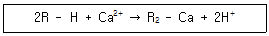
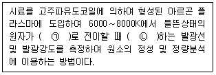
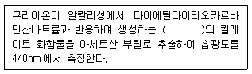
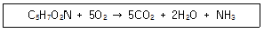
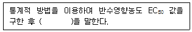
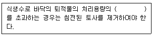
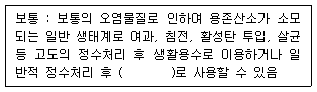

수질환경산업기사 (2020-06-06 기출문제)
1과목: 수질오염개론
1. 성층현상이 있는 호수에서 수온의 큰 변화가 있는 층은?
- hypolimnion
- thermocline
- sedimentation
- epilimnion
(정답률: 83%)

2. 녹조류가 가장 많이 번식하였을 때 호수 표수층의 pH는?
- 6.5
- 7.0
- 7.5
- 9.0
(정답률: 64%)
3. 경도와 알칼리도에 관한 설명으로 옳지 않은 것은?
- 총알칼리도는 M-알칼리도와 P-알칼리도를 합친 값이다.
- ‘총경도 ≤ M-알칼리도’ 일 때 ‘탄산경도 = 총경도’ 이다.
- 알칼리도, 산도는 pH 4.5∼8.3 사이에서 공존한다.
- 알칼리도 유발물질은 CO32-, HCO3-, OH- 등이다.
(정답률: 62%)
4. 비점오염원에 관한 설명으로 가장 거리가 먼 것은?
- 광범위한 지역에 걸쳐 발생한다.
- 강우 시 발생되는 유출수에 의한 오염이다.
- 발생량의 예측과 정량화가 어렵다.
- 대부분이 도시하수처리장에서 처리된다.
(정답률: 78%)
5. 바닷물 중에는 0.⑤4M의 MgCl2가 포함되어 있다. 바닷물 250mL에는 몇 g의 MgCl2가 포함되어 있는가? (단, 원자량 : Mg = 24.3, Cl = 35.5)
- 약 0.8
- 약 1.3
- 약 2.6
- 약 3.8
(정답률: 53%)
6. 미생물에 관한 설명으로 옳지 않은 것은?
- 진핵세포는 핵막이 있으나 원핵세포는 없다.
- 세포소기관인 리보솜은 원핵세포에 존재하지 않는다.
- 조류는 진핵미생물로 엽록체라는 세포소기관이 있다.
- 진핵세포는 유사분열을 한다.
(정답률: 61%)
7. Ca2+이온의 농도가 20mg/L, Mg2+이온의 농도가 1.2mg/L인 물의 경도 (mg/L as CaCO3)는? (단, Ca = 40, Mg = 24)
- 40
- 45
- 50
- 55
(정답률: 49%)
8. 유해물질과 중독증상과의 연결이 잘못된 것은?
- 카드뮴 - 골연화증, 고혈압, 위장장애 유발
- 구리 - 과다 섭취 시 구토와 복통, 만성중독 시 간경변 유발
- 납 - 다발성 신경염, 신경장애 유발
- 크롬 - 피부점막, 호흡기로 흡입되어 전신마비, 피부염 유발
(정답률: 67%)
9. 수질오염의 정의는 오염물질이 수계의 자정 능력을 초과하여 유입되어 수체가 이용목적에 적합하지 않게 된 상태를 의미하는데, 다음 중 수질오염현상으로 볼 수 없는 것은?
- 수중에 산소가 고갈되어 지는 현상
- 중금속의 유입에 따른 오염
- 질소나 인과 같은 무기물질이 수계에 소량 유입되는 현상
- 전염성 세균에 의한 오염
(정답률: 62%)
10. 크롬 중독에 관한 설명으로 틀린 것은?
- 크롬에 의한 급성중독의 특징은 심한 신장장애를 일으키는 것이다.
- 3가 크롬은 피부흡수가 어려우나 6가 크롬은 쉽게 피부를 통과한다.
- 자연 중의 크롬은 주로 3가 형태로 존재한다.
- 만성크롬 중독인 경우에는 BAL 등의 금속배설촉진제의 효과가 크다.
(정답률: 58%)
11. Marson과 Kolkwitz의 하천자정 단계 중 심한 악취가 없어지고 수중 저니의 산화(수산화철형성)로 인해 색이 호전되며 수질도에서 노란색으로 표시하는 수역은?
- 강부수성 수역(Polysaprobic)
- α-중부수성 수역(α-mesosaprobic)
- β-중부수성 수역(β-mesosaprobic)
- 빈부수성 수역(Oligosaprobic)
(정답률: 67%)
12. 25℃, pH 4.35인 용액에서 [OH-]의 농도(mol/L)는?
- 4.47×10-5
- 6.54×10-7
- 7.66×10-9
- 2.24×10-10
(정답률: 61%)
13. 지하수의 특성을 지표수와 비교해서 설명한 것으로 옳지 않은 것은?
- 경도가 높다.
- 자정작용이 빠르다.
- 탁도가 낮다.
- 수온변동이 적다.
(정답률: 74%)
14. 화학반응에서 의미하는 산화에 대한 설명이 아닌 것은?
- 산소와 화합하는 현상이다.
- 원자가가 증가되는 현상이다.
- 전자를 받아들이는 현상이다.
- 수소화합물에서 수소를 잃는 현상이다.
(정답률: 73%)
15. 호수에서의 부영양화현상에 관한 설명으로 옳지 않은 것은?
- 질소, 인 등 영양물질의 유입에 의하여 발생된다.
- 부영양화에서 주로 문제가 되는 조류는 남조류이다.
- 성층현상에 의하여 부영양화가 더욱 촉진된다.
- 조류제거를 위한 살조제는 주로 KMnO4를 사용한다.
(정답률: 66%)
16. 생물농축현상에 대한 설명으로 옳지 않은 것은?
- 생물계의 먹이사슬이 생물농축에 큰 영향을 미친다.
- 영양염이나 방사능 물질은 생물농축 되지 않는다.
- 미나마타병은 생물농축에 의한 공해병이다.
- 생체 내에서 분해가 쉽고, 배설률이 크면 농축이 되질 않는다.
(정답률: 68%)
17. 음용수 중에 암모니아성 질소를 검사하는 것의 위생적 의미는?
- 조류발생의 지표가 된다.
- 자정작용의 기준이 된다.
- 분뇨, 하수의 오염지표가 된다.
- 냄새 발생의 원인이 된다.
(정답률: 68%)
18. 다음 수역 중 일반적으로 자정계수가 가장 큰 것은?
- 폭포
- 작은 연못
- 완만한 하천
- 유속이 빠른 하천
(정답률: 72%)
19. 용액의 농도에 관한 설명으로 옳지 않은 것은?
- mole 농도는 용액 1L 중에 존재하는 용질의 gram 분자량의 수를 말한다.
- 몰랄농도는 규정농도라고도 하며 용매 1000g 중에 녹아 있는 용질의 몰수를 말한다.
- ppm과 mg/L를 엄격하게 구분하면 ppm = (mg/L)/Psol(Psol : 용액의 밀도)로 나타낸다.
- 노르말농도는 용액 1L 중에 녹아 있는 용질의 g당량수를 말한다.
(정답률: 63%)
20. PbSO4의 용해도는 물 1L당 0.038g이 녹는다. PbSO4의 용해도적(Ksp)은? (단, PbSO4 = 303g)
- 1.6×10-8
- 1.6×10-4
- 0.8×10-8
- 0.8×10-4
(정답률: 50%)
2과목: 수질오염방지기술
21. 1차 처리된 분뇨의 2차 처리를 위해 포기조, 2차 침전지로 구성된 활성슬러지 공정을 운영하고 있다. 운영조건이 다음과 같을 때 포기조 내의 고형물 체류시간(day)은? (단, 유입유량 = 200m3/day, 포기조 용량 = 1000m3, 잉여슬러지 배출량 = 50m3/day, 반송슬러지 SS 농도 = 1%, MLSS 농도 = 2500mg/L, 2차 침전지 유출수 SS농도 = 0mg/L)
- 4
- 5
- 6
- 7
(정답률: 55%)
22. 이온교환법에 의한 수처리의 화학반응으로 다음 과정이 나타낸 것은?

- 재생과정
- 세척과정
- 역세척과정
- 통수과정
(정답률: 59%)
23. 암모니아성 질소를 Air Stripping할 때(폐수 처리 시) 최적의 pH는?
- 4
- 6
- 8
- 10
(정답률: 54%)
24. 고도 정수처리 방법 중 오존처리의 설명으로 가장 거리가 먼 것은?
- HOCL 보다 강력한 환원제이다.
- 오존은 반드시 현장에서 생산하여야 한다.
- 오존은 몇몇 생물학적 분해가 어려운 유기물을 생물학적 분해가 가능한 유기물로 전환시킬 수 있다.
- 오존에 의해 처리된 처리수는 부착상 생물학적 접촉조인 입상 활성탄 속으로 통과시키는데, 활성탄에 부착된 미생물은 오존에 의해 일부 산화된 유기물을 무기물로 분해시키게 된다.
(정답률: 57%)
25. 하수처리장의 1차 침전지에 관한 설명 중 틀린 것은?
- 표면부하율은 계획1일 최대오수량에 대하여 25∼40m3/m2·day로 한다.
- 슬러지제거기를 설치하는 경우 침전지 바닥기울기는 1/100∼1/200으로 완만하게 설치한다.
- 슬러지제거를 위해 슬러지 바닥에 호퍼를 설치하며 그 측벽의 기울기는 60° 이상으로 한다.
- 유효수심은 2.5∼4m를 표준으로 한다.
(정답률: 57%)
26. 고형물의 농도가 16.5%인 슬러지 200kg을 건조시켰더니 수분이 20%로 나타났다. 제거된 수분의 양(kg)은? (단, 슬러지 비중 = 1.0)
- 127
- 132
- 159
- 166
(정답률: 41%)
27. 급속 여과에 대한 설명으로 가장 거리가 먼 것은?
- 급속 여과는 용해성 물질제거에는 적합하지 않다.
- 손실수두는 여과지의 면적에 따라 증가하거나 감소한다.
- 급속 여과는 세균제거에 부적합하다.
- 손실수두는 여과 속도에 영향을 받는다.
(정답률: 56%)
28. 하수의 3차 처리공법인 A/O공정에서 포기조의 주된 역할을 가장 적합하게 설명한 것은?
- 인의 방출
- 질소의 탈기
- 인의 과잉섭취
- 탈질
(정답률: 63%)
29. 플러그흐름반응기가 1차 반응에서 폐수의 BOD가 90% 제거되도록 설계되었다. 속도상수 K가 0.3h-1일 때 요구되는 체류시간(h)은?
- 4.68
- 5.68
- 6.68
- 7.68
(정답률: 38%)
30. 포기조내 MLSS의 농도가 2500mg/L이고, SV30이 30%일 때 SVI(mL/g)는?
- 85
- 120
- 135
- 150
(정답률: 60%)
31. 1L 실린더의 250mL 침전 부피 중 TSS 농도가 3⑤0mg/L로 나타나는 포기조 혼합액의 SVI(mL/g)는?
- 62
- 72
- 82
- 92
(정답률: 50%)
32. 하루 5000톤의 폐수를 처리하는 처리장에서 최초침전지의 Weir의 단위길이당 월류부하를 100m3/m·day로 제한할 때 최초침전지에 설치하여야 하는 월류 Weir의 유효 길이(m)는?
- 30
- 40
- 50
- 60
(정답률: 53%)
33. Screen 설치부에 유속한계를 0.6m/sec 정도로 두는 이유는?
- By pass를 사용
- 모래의 퇴적현상 및 부유물이 찢겨나가는 것을 방지
- 유지류 등의 scum을 제거
- 용해성 물질을 물과 분리
(정답률: 72%)
34. 일반적인 슬러지 처리공정을 순서대로 배치한 것은?
- 농축→약품조정(개량)→유기물의 안정화→건조→탈수→최종처분
- 농축→유기물의 안정화→약품조정(개량)→탈수→건조→최종처분
- 약품조정(개량)→농축→유기물의 안정화→탈수→건조→최종처분
- 유기물의 안정화→농축→약품조정(개량)→탈수→건조→최종처분
(정답률: 59%)
35. 염소살균에 관한 설명으로 가장 거리가 먼 것은?
- 염소살균강도는 hOCl＞OCl＞chlotamines 순이다.
- 염소살균력은 온도가 낮고, 반응시간이 길며, pH가 높을 때 강하다.
- 염소요구량은 물에 가한 일정량의 염소와 일정한 기간이 지난 후에 남아 있는 유리 및 결합잔료염소와의 차이다.
- 파괴점염소주입법이란 파괴점 이상으로 염소를 주입하여 살균하는 것을 말한다.
(정답률: 64%)
36. 폐수처리 공정에서 발생하는 슬러지의 종류와 특징이 알맞게 연결된 것은?
- 1차슬러지 - 성분이 주로 모래이므로 수거하여 매립한다.
- 2차슬러지 - 생물학적 반응조의 후침전지 또는 2차 침전지에서 상등수로부터 분리된 세포물질이 주종을 이룬다.
- 혐기성소화슬러지 - 슬러지의 색이 갈색 내지 흑갈색이며, 악취가 없고, 잘 소화된 것은 쉽게 탈수되고 생화학적으로 안정되어 있다.
- 호기성소화슬러지 - 악취가 있고 부패성이 강하며, 쉽게 혐기성 소화시킬 수 있고, 비중이 크며, 염도도 높다.
(정답률: 56%)
37. 염소 요구량이 5mg/L인 하수 처리수에 잔류염소 농도가 0.5mg/L가 되도록 염소를 주입하려고 할 때 염소 주입량(mg/L)은?
- 4.5
- 5.0
- 5.5
- 6.0
(정답률: 64%)
38. 폐수처리 시 염소소독을 실시하는 목적으로 가장 거리가 먼 것은?
- 살균 및 냄새 제거
- 유기물의 제거
- 부식 통제
- SS 및 탁도 제거
(정답률: 60%)
39. 물리·화학적 질소제거 공정이 아닌 것은?
- Air Stripping
- Breakpoint Chlorination
- Ion Exchange
- Sequencing Batch Reactor
(정답률: 55%)
40. 함수율 96%인 혼합슬러지를 함수율 80%의 탈수브레이크로 만들었을 때 탈수 후 슬러지 부피는? (단, 탈수 후 슬러지 부피 = 탈수 후 슬러지 부피/탈수 전 슬러지 부피, 탈리액으로 유출 된 슬러지의 양은 무시)
- 1/3
- 1/4
- 1/5
- 1/6
(정답률: 64%)
3과목: 수질오염공정시험방법
41. 유도결합플라스마-원자발광분광법의 원리에 관한 다음 설명 중 ( )안의 내용으로 알맞게 짝지어진 것은?

- ㉠ 들뜬상태 ㉡ 흡수
- ㉠ 바닥상태 ㉡ 흡수
- ㉠ 들뜬상태 ㉡ 방출
- ㉠ 바닥상태 ㉡ 방출
(정답률: 67%)
42. 구리의 측정(자외선/가시선 분광법 기준)원리에 관한 내용으로 ( )에 옳은 것은?

- 황갈색
- 청색
- 적갈색
- 적자색
(정답률: 57%)
43. 다음 중 4각 위어에 의한 유량측정 공식은? (단, Q = 유량(m3/min), K = 유량계수, h = 위어의 수두(m), b = 절단의 폭(m))
- Q = Kh5/2
- Q = Kh3/2
- Q = Kbh5/2
- Q = Kbh3/2
(정답률: 59%)
44. 박테리아가 산화되는 이론적인 식이다. 박테리아 100mg이 산화되기 위한 이론적 산소요구량(ThOD, g as O2)은?

- 0.122
- 0.132
- 0.142
- 0.152
(정답률: 57%)
45. 시료를 질산-과염소산으로 전처리하여야 하는 경우로 가장 적합한 것은?
- 유기물 함량이 비교적 높지 않고 금속의 수산화물, 산화물, 인산염 및 황화물을 함유하고 있는 시료를 전처리하는 경우
- 유기물을 다량 함유하고 있으면서 산화분해가 어려운 시료를 전처리하는 경우
- 다량의 점토질 또는 규산염을 함유한 시료를 전처리하는 경우
- 유기물 등을 많이 함유하고 있는 대부분의 시료를 전처리하는 경우
(정답률: 52%)
46. 시험에 적용되는 온도 표시로 틀린 것은?
- 실온 : 1∼35℃
- 찬곳 : 0℃ 이하
- 온수 : 60∼70℃
- 상온 : 15∼25℃
(정답률: 75%)
47. 총대장균군의 정성시험(시험관법)에 대한 설명 중 옳은 것은?
- 완전시험에는 엔도 또는 EMB 한천배지를 사용한다.
- 추정시험 시 배양온도는 48±3℃ 범위이다.
- 추정시험에서 가스의 발생이 있으면 대장균군의 존재가 추정된다.
- 확정시험 시 배지의 색깔이 갈색으로 되었을 때는 완전시험을 생략할 수 있다.
(정답률: 54%)
48. 물 속의 냄새를 측정하기 위한 시험에서 시료 부피 4mL와 무취 정제수(희석수) 부피 196mL인 경우 냄새역치(TON)는?
- 0.02
- 0.5
- 50
- 100
(정답률: 51%)
49. 수질오염공정시험기준에서 진공이라 함은?
- 따로 규정이 없는 한 15mmHg 이하를 말함.
- 따로 규정이 없는 한 15mmH2O 이하를 말함.
- 따로 규정이 없는 한 4mmHg 이하를 말함.
- 따로 규정이 없는 한 4mmH2O 이하를 말함.
(정답률: 78%)
50. 유기물 함량이 비교적 높지 않고 금속의 수산화물, 산화물, 인산염 및 황화물을 함유하고 있는 시료에 적용되며 휘발성 또는 난용성 염화물을 생성하는 금속 물질의 분석에는 주의하여야 하는 시료의 전처리 방법(산분해법)으로 가장 적절한 것은?
- 질산-염산법
- 질산-황산법
- 질산-과염소산법
- 질산-불화수소산법
(정답률: 60%)
51. 기체크로마토그래피법으로 측정되지 않는 항목은?
- 폴리클로리네이티드비페닐
- 유기인
- 비소
- 알킬수은
(정답률: 46%)
52. 노말헥산 추출물질 시험법은?
- 중량법
- 적정법
- 흡광광도법
- 원자흡광광도법
(정답률: 48%)
53. 0.⑤N-KMnO4 4.0L를 만들려고 할 때 필요한 KMnO4의 양(g)은? (단, 원자량 K=39, Mn=55)
- 3.2
- 4.6
- 5.2
- 6.3
(정답률: 34%)
54. 흡광광도법으로 어떤 물질을 정량하는데 기본원리인 Lambert-Beer 법칙에 관한 설명 중 옳지 않은 것은?
- 흡광도는 시료물질 농도에 비례한다.
- 흡광도는 빛이 통과하는 시료 액층의 두께에 반비례한다.
- 흡광계수는 물질에 따라 각각 다르다.
- 흡광도는 투광도의 역대수이다.
(정답률: 58%)
55. 원자흡수분광광도법은 원자의 어느 상태일 때 특유 파장의 빛을 흡수하는 현상을 이용한 것인가?
- 여기상태
- 이온상태
- 바닥상태
- 분자상태
(정답률: 67%)
56. 윙클러 아지드 변법에 의한 DO 측정 시 시료에 Fe(Ⅲ) 100∼200mg/L가 공존하는 경우에 시료전처리 과정에서 첨가하는 시약으로 옳은 것은?
- 시안화나트륨용액
- 플루오린화칼륨용액
- 수산화망간용액
- 황산은
(정답률: 46%)
57. 클로로필 a(chlorophyll-a) 측정에 관한 내용 중 옳지 않은 것은?
- 클로로필 색소는 사염화탄소 적당량으로 추출한다.
- 시료 적당량(100∼2000mL)을 유리섬유 여과지(GF/F, 47mm)로 여과 한다.
- 663nm, 645nm, 630nm의 흡광도 측정은 클로로필 a, b 및 c를 결정하기 위한 측정이다.
- 750nm는 시료 중의 현탁물질에 의한 탁도정도에 대한 흡광도이다.
(정답률: 33%)
58. 물벼룩을 이용한 급성 독성 시험법과 관련된 생태독성값(TU)에 대한 내용으로 ( )에 옳은 것은?

- 100에서 EC50 값을 곱하여 준 값
- 100에서 EC50 값을 나눠 준 값
- 10에서 EC50 값을 곱하여 준 값
- 10에서 EC50 값을 나눠 준 값
(정답률: 63%)
59. 시료의 전처리 방법(산분해법) 중 유기물 등을 많이 함유하고 있는 대부분의 시료에 적용하는 것은?
- 질산법
- 질산-염산법
- 질산-황산법
- 질산-과염소산법
(정답률: 51%)
60. 순수한 물 150mL에 에틸알코올(비중 0.79) 80mL를 혼합하였을 때 이 용액 중의 에틸알코올 농도(W/W %)는?
- 약 30%
- 약 35%
- 약 40%
- 약 45%
(정답률: 42%)
4과목: 수질환경관계법규
61. 낚시금지, 제한구역의 안내판 규격에 관한 내용으로 옳은 것은?
- 바탕색 : 흰색, 글씨 : 청색
- 바탕색 : 청색, 글씨 : 흰색
- 바탕색 : 녹색, 글씨 : 흰색
- 바탕색 : 흰색, 글씨 : 녹색
(정답률: 76%)
62. 법적으로 규정된 환경기술인의 관리사항이 아닌 것은?
- 환경오염방지를 위하여 환경부장관이 지시하는 부하량 통계 관리에 관한 사항
- 폐수배출시설 및 수질오염방지시설의 관리에 관한 사항
- 폐수배출시설 및 수질오염방지시설의 개선에 관한 사항
- 운영일지의 기록·보존에 관한 사항
(정답률: 60%)
63. 수질오염방시시설 중 물리적 처리시설에 해당되는 것은?
- 응집시설
- 흡착시설
- 이온교환시설
- 침전물개량시설
(정답률: 71%)
64. 사업장별 환경기술인의 자격기준에 해당하지 않는 것은?
- 방지시설 설치면제 대상인 사업장과 배출시설에서 배출되는 수질오염물질 등을 공동방지시설에서 처리하게 하는 사업장은 제4종사업장·제5종사업장에 해당하는 환경기술인을 둘 수 있다.
- 연간 90일 미만 조업하는 제1종부터 제3종 까지의 사업장은 제4종사업장·제5종사업장에 해당하는 환경기술인을 선임할 수 있다.
- 대기환경기술인으로 임명된 자가 수질환경기술인의 자격을 함께 갖춘 경우에는 수질환경기술인을 겸임할 수 있다.
- 공동방지시설의 경우에는 폐수 배출량이 제1종, 제2종사업장 규모에 해당하는 경우 제3종사업장에 해당하는 환경기술인을 둘 수 있다.
(정답률: 56%)
65. 환경부장관은 가동개시신고를 한 폐수무방류 배출시설에 대하여 10일 이내에 허가 또는 변경허가의 기준에 적합한지 여부를 조사하여야 한다. 이 규정에 의한 조사를 거부·방해 또는 기피한 자에 대한 벌칙 기준은?
- 500만원 이하의 벌금
- 1년 이하의 징역 또는 1천만원 이하의 벌금
- 2년 이하의 징역 또는 2천만원 이하의 벌금
- 3년 이하의 징역 또는 3천만원 이하의 벌금
(정답률: 63%)
66. 환경기술인의 임명신고에 관한 기준으로 옳은 것은?（단, 환경기술인을 바꾸어 임명하는 경우)
- 바꾸어 임명한 즉시 신고하여야 한다.
- 바꾸어 임명한 후 3일 이내에 신고하여야 한다.
- 그 사유가 발생한 즉시 신고하야야 한다.
- 그 사유가 발생한 날부터 5일 이내에 신고하여야 한다.
(정답률: 59%)
67. 초과배출부과금의 부과 대상 수질오염물질이 아닌 것은?
- 트리클로로에틸렌
- 노말헥산추출물질함유량(광유류)
- 유기인화합물
- 총질소
(정답률: 51%)
68. 비점오염저감시설(식생형 시설)의 관리, 운영 기준에 관한 내용으로 ( )에 옳은 내용은?

- 10%
- 15%
- 20%
- 25%
(정답률: 44%)
69. 폐수처리업자에게 폐수처리업의 등록을 취소하거나 6개월 이내의 기간을 정하여 영업정지를 명할 수 있는 경우가 아닌 것은?
- 다름 사람에게 등록증을 대여한 경우
- 1년에 2회 이상 영업정지처분을 받은 경우
- 등록 후 1년 이내에 영업을 개시하지 않은 경우
- 영업정지처분 기간에 영업행위를 한 경우
(정답률: 73%)
70. 환경기술인의 교육기관으로 옳은 것은?
- 환경관리공단
- 환경보전협회
- 환경기술연수원
- 국립환경인력개발원
(정답률: 66%)
71. 비점오염원의 변경신고 기준으로 틀린 것은?
- 상호·대표자·사업명 또는 업종의 변경
- 총 사업면적·개발면적 또는 사업장 부지면적이 처음 신고면적의 100분의 30 이상 증가하는 경우
- 비점오염저감시설의 종류, 위치, 용량이 변경되는 경우
- 비점오염원 또는 비점오염저감시설의 전부 또는 일부를 폐쇄하는 경우
(정답률: 66%)
72. 수계영향권별로 배출되는 수질오염물질을 총량으로 관리할 수 있는 주체는?
- 대통령
- 국무총리
- 시·도지사
- 환경부장관
(정답률: 56%)
73. 기본부과금산정 시 방류수수질기준을 100% 초과한 사업자에 대한 부과계수는?
- 2.4
- 2.6
- 2.8
- 3.0
(정답률: 66%)
74. 환경기술인 등의 교육기간, 대상자 등에 관한 내용으로 틀린 것은?
- 폐수처리업에 종사하는 기술요원의 교육기관은 국립환경인력개발원이다.
- 환경기술인과정과 폐수처리기술요원과정의 교육기간은 3일 이내로 한다.
- 최초교육은 환경기술인 등이 최초로 업무에 종사한 날부터 1년 이내에 실시하는 교육이다.
- 보수교육은 최초교육 후 3년 마다 실시하는 교육이다.
(정답률: 63%)
75. 호소의 수질상황을 고려하여 낚시금지구역을 지정할 수 있는 자는?
- 환경부장관
- 중앙환경정책위원회
- 시장·군수·구청장
- 수면관리기관장
(정답률: 63%)
76. 1일 폐수배출량이 1500m3인 사업장의 규모로 옳은 것은?
- 제1종 사업장
- 제2종 사업장
- 제3종 사업장
- 제4종 사업장
(정답률: 71%)
77. 수질 및 수생태계 환경기준인 수질 및 수생태계 생태별 생물학적 특성 이해표에 관한 내용 중 생물 등급이 [약간나쁨∼매우나쁨] 생물지표종(어류)으로 틀린 것은?
- 피라미
- 미꾸라지
- 메기
- 붕어
(정답률: 75%)
78. 환경부장관은 개선명령을 받은 자가 개선명령을 이행하지 아니하거나 기간 이내에 이행은 하였으나 배출허용기준을 계속 초과할 때에는 해당 배출시설의 전부 또는 일부에 대한 조업 정지를 명할 수 있다. 이에 따른 조업정지 명령을 위반한 자에 대한 벌칙기준은?
- 1년 이하의 징역 또는 1천만원 이하의 벌금
- 2년 이하의 징역 또는 2천만원 이하의 벌금
- 3년 이하의 징역 또는 3천만원 이하의 벌금
- 5년 이하의 징역 또는 5천만원 이하의 벌금
(정답률: 44%)
79. 수질 및 수생태계 환경기준 중 하천에서 생활환경 기준의 등급별 수질 및 수생태계 상태에 관한 내용으로 ( )에 옳은 내용은?

- 재활용수
- 농업용수
- 수영용수
- 공업용수
(정답률: 61%)
80. 공공수역 중 환경부령으로 정하는 수로가 아닌 것은?
- 지하수로
- 농업용수로
- 상수관로
- 운하
(정답률: 75%)